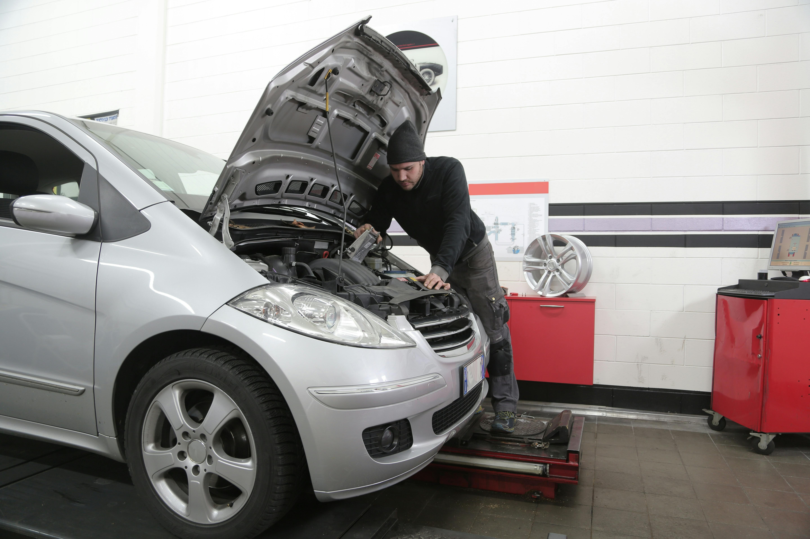

Ensure your engine runs smoothly with our comprehensive diagnostics. We use state-of-the-art tools to identify and fix any issues, preventing costly repairs down the road.

Stay safe with our expert brake services. We inspect, repair, and replace brake components to ensure optimal stopping power and your safety on the road.
From tire rotations to replacements, we keep your tires in perfect condition. Our services ensure better traction, improved fuel efficiency, and a smoother ride.

Keep your car in peak condition with our routine maintenance services. We handle oil changes, fluid checks, and other essential services to extend your vehicle's life and performance.